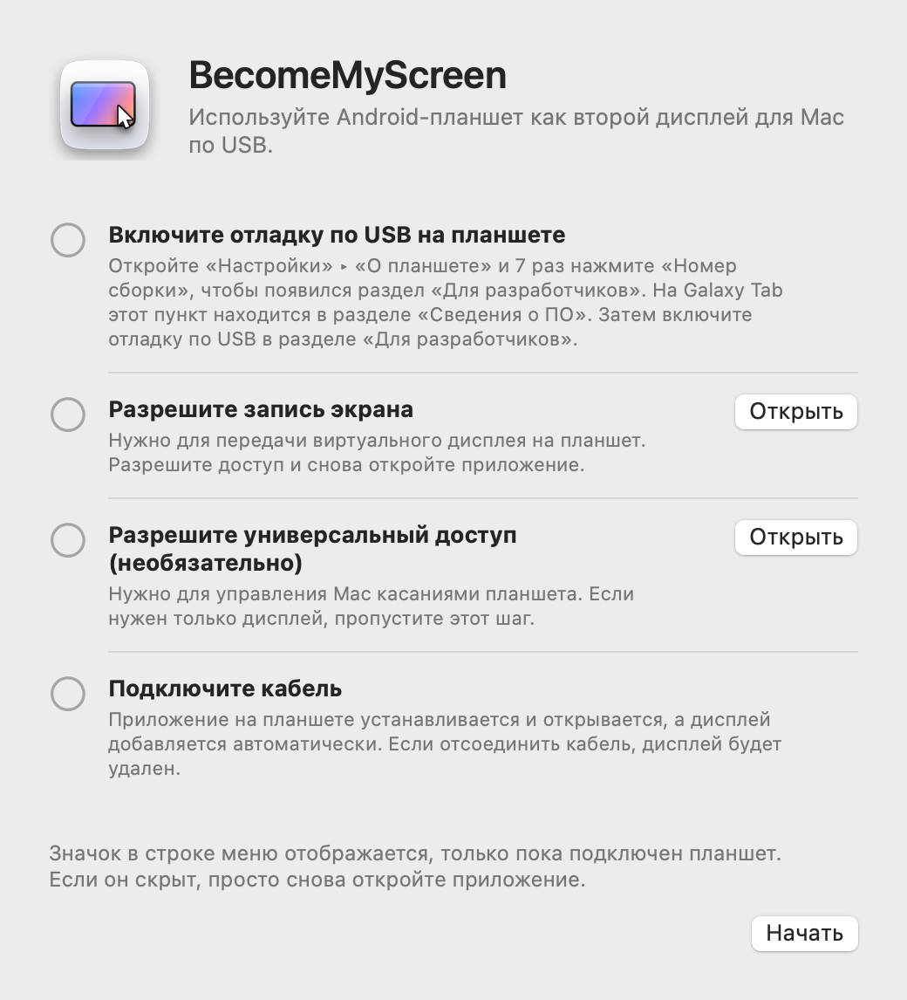
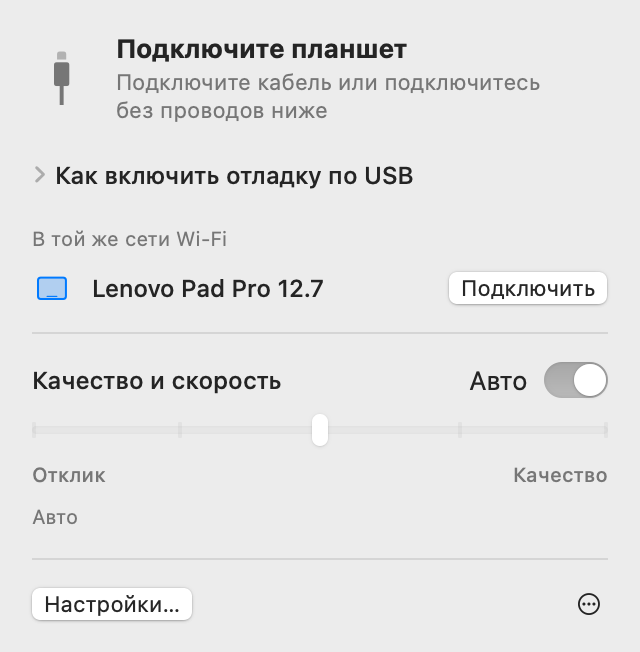
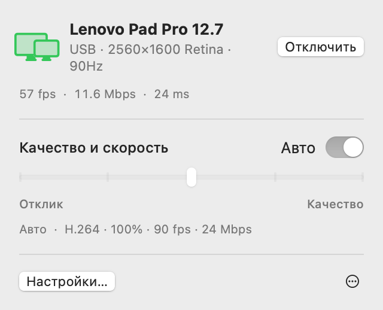
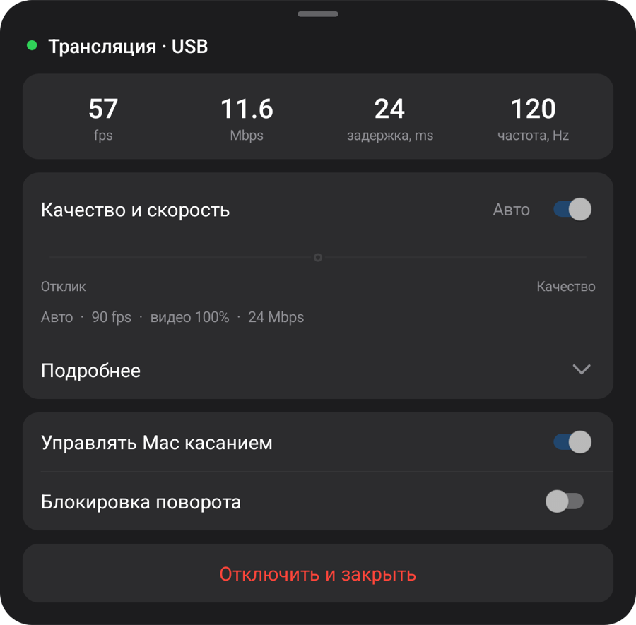
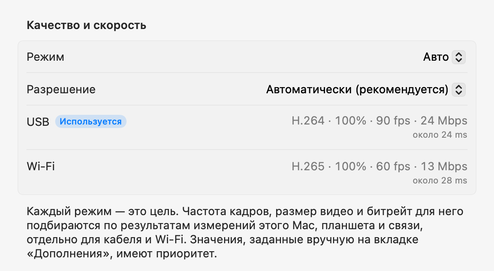

Android-планшет
как второй дисплей для Mac.
Подключите USB-кабель — и планшет станет дисплеем для Mac. Отсоедините его, и экран продолжит работать в той же сети Wi‑Fi. Приложение для Mac само устанавливает и открывает приложение на планшете, а учетная запись не нужна.
Откройте ZIP-архив, переместите приложение в папку «Программы» и откройте его. О первом подключении — в разделе «Настройка».
Это приложение для Mac. Откройте эту страницу на Mac, чтобы загрузить его.

Настройка
Настройка нужна только один раз. Затем при подключении кабеля дисплей добавляется сам, а в той же сети Wi‑Fi подключение работает без кабеля.
-
Установите приложение для Mac
Откройте загруженный ZIP-архив, переместите BecomeMyScreen в папку «Программы» и откройте его. Разрешите запись экрана, затем откройте приложение еще раз.
-
Включите отладку по USB на планшете
Откройте «Настройки» › «О планшете» и семь раз нажмите «Номер сборки», чтобы появился раздел «Для разработчиков». На Galaxy Tab этот пункт находится в разделе «Сведения о ПО». Затем включите отладку по USB в разделе «Для разработчиков».
-
Подключите кабель
Когда планшет спросит, разрешить ли отладку по USB, отметьте «Всегда разрешать отладку с этого компьютера» и нажмите «Разрешить». Mac установит и откроет приложение на планшете, а затем добавит дисплей. Отдельно загружать приложение для планшета не нужно.

Скорость
Время с момента, когда Mac захватывает экран, до момента, когда планшет его отрисовывает. Измерено на Lenovo Pad Pro 12.7 и Mac с M4 Pro.
| Размер видео | 60 fps | 120 fps |
|---|---|---|
| 100%2560×1600 | 20 ms | 24 ms |
| 75%1920×1200 | 14 ms | 19 ms |
| 50%1280×800 | 11 ms | 16 ms |
Аппаратный кодер чипа Apple сжимает изображение экрана в H.264 и передает его по USB, а аппаратный декодер планшета отрисовывает каждый кадр сразу по получении. При первом подключении режим «Авто» измеряет, сколько может обработать декодер, и выбирает максимальную частоту кадров без отставания. На этом планшете он выбрал 90 fps.
Методика измерения: после поправки на разницу часов двух устройств мы измерили время между захватом кадра на Mac и отрисовкой этого кадра на планшете.
Без проводов
Планшет, который хотя бы раз подключался по USB, работает и без проводов в той же сети Wi‑Fi. Отсоедините кабель во время работы — экран продолжит работать по Wi‑Fi.
- Подключение
- Откройте приложение на планшете, и он появится в списке «В той же сети Wi‑Fi» в строке меню Mac. Нажмите «Подключить» — и экран заработает.
- Отсоединение кабеля
- Переход на Wi‑Fi занимает меньше секунды. Виртуальный дисплей и расположение окон сохраняются, а при повторном подключении кабеля работа возвращается на USB.
- Безопасность
- Ключ для беспроводного подключения передается только по USB-кабелю. Подключение устанавливается лишь после проверки ключа, а изображение экрана и ввод полностью шифруются с помощью AES-256-GCM.
- Адаптивная подача кадров
- Планшет подтверждает каждый полученный кадр, а Mac пропускает столько кадров, на сколько отстал, и подстраивает битрейт. Даже если Wi‑Fi ненадолго замедлится, задержка не накапливается.

| Подключение | Задержка | Примечания |
|---|---|---|
| USB | Около 20–25 ms | Максимальная частота кадров планшета |
| Wi‑Fi 5 GHz | 40–55 ms | 60 fps; битрейт автоматически растет до значения, заданного настройкой качества |
| Wi‑Fi 2.4 GHz | 40–65 ms | Иногда задержка превышает 100 ms, что может выглядеть как подтормаживание |
Измерено на Lenovo Pad Pro 12.7 при 2560×1600 с постоянно меняющимся изображением. Если планшет подключен к Wi‑Fi 2,4 GHz, приложение предложит перейти на 5 GHz.
Качество и отклик
Выберите один из пяти уровней или оставьте «Авто». Меняйте настройку в строке меню Mac или в меню планшета — обе стороны меняются вместе.
| Режим | Частота кадров | Размер видео | Битрейт |
|---|---|---|---|
| Авто | 90 fps | 100% | 24 Mbps |
| 1Самый быстрый отклик | 120 fps | 50% | 8 Mbps |
| 2Быстрый отклик | 120 fps | 75% | 14 Mbps |
| 3Баланс | 90 fps | 100% | 24 Mbps |
| 4Высокое качество | 90 fps | 100% | 33 Mbps |
| 5Наилучшее качество | 60 fps | 100% | 39 Mbps |
Измерено на Lenovo Pad Pro 12.7 (2560×1600, 120 Hz), подключенном по USB к Mac с M4 Pro. Каждый режим — это цель: на другом Mac или планшете, а также по Wi‑Fi его значения подбираются заново по результатам измерений. Режим «Авто» совпадает с режимом «Баланс».
Размер видео задается отдельно от разрешения, которое видит Mac. Уменьшенное видео все равно заполняет экран планшета, снижая нагрузку на декодер и соответственно задержку.
При первом подключении приложение примерно за 10 секунд измеряет скорость кабеля, видеокодера Mac и декодера планшета во всех его режимах, а при первом подключении по Wi‑Fi — скорость сети. Каждый режим подстраивается под эти результаты отдельно для кабеля и Wi‑Fi, а на вкладке «Дополнения» в настройках можно вручную задать любое значение для каждого подключения. Если кабель медленный, приложение предложит его заменить.



Касания
Касания планшета Mac получает как ввод с мыши. Функция включается, когда вы разрешите универсальный доступ на Mac.
| На планшете | На Mac |
|---|---|
| Касание | Нажатие |
| Перетаскивание | Перетаскивание |
| Перетаскивание двумя пальцами | Прокрутка |
| Касание двумя пальцами | Нажатие правой кнопкой |
| Касание тремя пальцами | Открывает меню планшета |
| Рисование стилусом | Поступает на Mac как ввод с графического планшета, с силой нажатия и наклоном |
| Наведение стилуса или мыши на экран | Перемещает указатель. Касание с нажатой кнопкой стилуса — нажатие правой кнопкой |
Указатель возвращается на место
Когда вы касаетесь планшета, указатель Mac перемещается в эту точку. Если затем немного сдвинуть мышь, указатель вернется туда, где был до касания, — не придется тянуть его обратно к тому, чем вы занимались на основном дисплее. Эту функцию можно выключить в настройках.
Подробности
- Значок в строке меню
-
Он отображается, только пока подключен планшет. Если значок скрыт, снова откройте приложение — он ненадолго появится с открытой панелью.
- Ожидание
- Подготовка
- Используется
- Требует внимания
- Открытие приложения на планшете
- Если при подключении кабеля приложение на планшете не запущено, Mac откроет его и включит экран, если он выключен. Экран блокировки при этом никогда не обходится.
- Обновления
- Приложение для Mac проверяет новые версии и обновляется, когда вы решите. Если в нем есть более новое приложение для планшета, планшет обновляется по кабелю до запуска дисплея.
- Книжная ориентация
- Поверните планшет вертикально, и виртуальный дисплей тоже будет пересоздан в книжной ориентации.
- Частота обновления и отключение экрана
- Во время трансляции частота обновления планшета удерживается, чтобы не падать до 60 Hz, и экран не выключается.
- Проверка кабеля
- Если USB подключается на скорости ниже 480 Mbps, передача не превышает 8 MB/s или связь обрывается три раза за три минуты, приложение предложит попробовать другой кабель или порт.
- Если связь оборвалась
- Если кабель выпал, экран продолжит работать по Wi‑Fi. Если продолжить без проводов не получается, виртуальный дисплей некоторое время сохраняется, и если планшет за это время переподключится, расположение окон останется прежним.
- «Отключить» и «Переподключить»
- Нажмите «Отключить» в строке меню, и показ на планшете приостановится, даже если кабель подключен. Чтобы продолжить, нажмите «Переподключить».
- Приложение на планшете закрывается само
- Если к планшету ничего не подключено, даже зарядное устройство, приложение на планшете само закроется через 10 секунд. Если вместо этого можно ждать беспроводного подключения, оно ждет 2 минуты.
Требования
- Mac
- Mac с чипом Apple, macOS 14 или новее
- Планшет
- Android 8.0 или новее, на устройстве, где можно включить отладку по USB
- Кабель
- USB-кабель с поддержкой передачи данных. Кабели только для зарядки не подключатся. Порт на самом Mac надежнее, чем концентратор.
- Без проводов
- Mac и планшет должны быть в одной сети Wi‑Fi; рекомендуется 5 GHz. Первое подключение должно быть по USB.
- Разрешения на Mac
- Запись экрана. Также «Универсальный доступ» — для управления Mac касанием и «Локальная сеть» — для работы без проводов.
Часто задаваемые вопросы
Нужно ли устанавливать приложение на планшет?
Нет. Приложение для планшета входит в приложение для Mac, поэтому при подключении кабеля Mac сам установит и откроет его. После обновления приложения для Mac приложение на планшете обновится вместе с ним при следующем подключении.
Работает ли по Wi‑Fi?
Да. После одного подключения по USB в дальнейшем можно подключаться без проводов в той же сети Wi‑Fi. Откройте приложение на планшете и нажмите «Подключить» в строке меню Mac или просто отсоедините кабель во время работы. Задержка немного выше, чем по USB (40–55 ms в сети 5 GHz), а в Wi‑Fi 2,4 GHz изображение иногда подтормаживает, поэтому рекомендуется 5 GHz.
Почему первое подключение должно быть по USB?
Потому что ключ для беспроводного подключения передается только по кабелю. Так никакое другое устройство в той же сети Wi‑Fi не сможет выдать себя за ваш планшет и подключиться к вашему Mac. Заодно в этот момент на планшет устанавливается приложение.
Работает ли сила нажатия стилуса?
Да. Сила нажатия и наклон стилуса поступают в macOS как ввод с графического планшета (нажатие, наклон и приближение). Используется стандартный ввод стилуса Android, поэтому для S Pen и стилусов Lenovo не нужны дополнительные SDK или драйверы. Проверено со стилусом для Lenovo Pad Pro 12.7.
С какими планшетами это работает?
С любым планшетом на Android 8.0 или новее, где можно включить отладку по USB. Разработка и измерения велись на Lenovo Pad Pro 12.7 (2944×1840, 120 Hz); другие устройства пока лично не проверялись. Разрешение и ориентация виртуального дисплея при подключении соответствуют экрану планшета.
Почему приложения нет в App Store?
Для создания виртуального дисплея используется закрытая функция macOS, поэтому приложение нельзя опубликовать в App Store. Вместо этого оно подписано сертификатом разработчика Apple и нотаризовано Apple, поэтому открывается сразу после загрузки.
Зачем нужны запись экрана и универсальный доступ?
Запись экрана захватывает виртуальный дисплей для передачи на планшет, универсальный доступ превращает касания и стилус планшета во ввод на Mac, а локальная сеть нужна для поиска планшетов в той же сети Wi‑Fi. Изображение экрана передается только по USB-кабелю или внутри вашей сети Wi‑Fi (при беспроводном подключении — в зашифрованном виде) и никогда не уходит в интернет.
Подключение постоянно обрывается.
Попробуйте другой кабель с поддержкой передачи данных или подключите его напрямую к порту Mac, а не к концентратору. Приложение заранее сообщит, если USB подключается медленно или часто обрывается. После кратковременного обрыва виртуальный дисплей сохраняется 15 секунд и работа продолжается с того же места.
Что, если планшет заблокирован?
Mac включит экран и откроет приложение, но никогда не обходит блокировку. Разблокируйте планшет PIN-кодом или графическим ключом, и подключение произойдет сразу.
Работает ли на Mac с процессором Intel?
Текущая версия предназначена только для Mac с чипом Apple.
Загрузка
Это приложение для Mac. Откройте эту страницу на Mac, чтобы загрузить его.
Откройте ZIP-архив, переместите приложение в папку «Программы» и откройте его. О первом подключении — в разделе «Настройка».